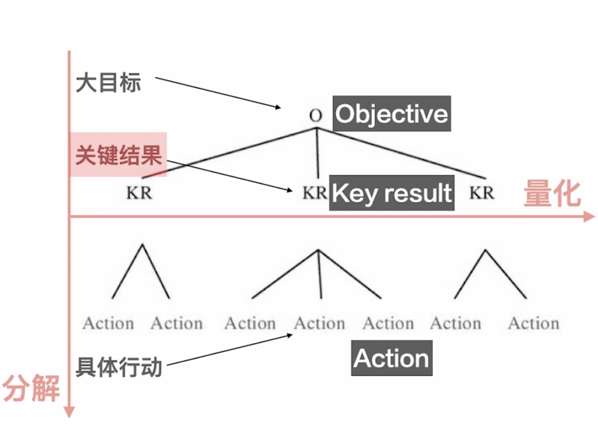
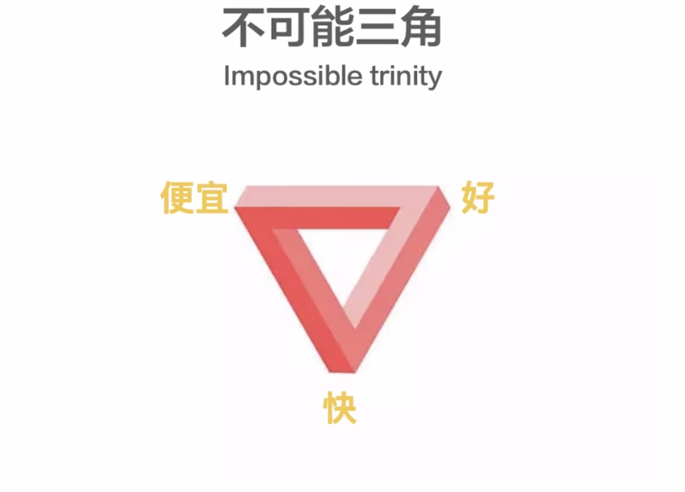

【跨学科通识系列03】工程学重要模型
方法论
- 行胜于言
- 分解结构
- 量化
- 列清单
- 取舍
工程分解结构 Work Breakdown Structure
工程学的精髓所在
把任何复杂的事情拆分成易于操作的简单模块，然后一个一个搞定。
- 第一步：看全局。对全局整体地分析，并进行粗略划分。
- 第二步：找聚焦（Focus）。先聚焦其中的一个部分，其他还没有完成的部分应当立即从大脑中消失。即专注聚焦（工程分解的孪生能力）。如果没有分解，就无从聚焦；如果没有聚焦，分解了也没有意义。Focus like a laser, not a flashlight.
万事开头难$\rightarrow$天下难事必作于易
工程分解结构的真正含义：既见树木，也见森林。
从知到行：
- 设定大目标，建立全局观
- 分解—大概要分几步达到大目标
- 再分解—1个月内要做什么
- todo list—1周内能做什么
- 时间表—1天内能做什么
学习新学科：建立整体框架$\rightarrow$学知识$\rightarrow$建联系
知行合一：想和做两方面平衡
量化 Quantification
有条理的对现实生活进行量化模型思考
- 首先：工程分解结构。从最简单的地方开始假设。
- 然后：推演（Elaborate）剩下的变量。需要写下来、画出来、说出来。随着线索找到更多的变量。
- 量化，构建数学模型。
量化评估方法（估算模型，$\Rightarrow$商业思维）：
- 成本收益二分法
- 投入产出二分法（ROI，投入产出比）
建立数学模型：
- 找到最容易想到的变量
- 通过叙事、画图找到更多的变量
- 简单的四则运算
OKR (objective and key results, 目标和关键结果管理)
工程分解结构+量化
分解$\downarrow$ 量化$\rightarrow$
$\text{OKR}=\text{Objective}\ \text{大目标} + \text{Key result}\ \text{关键结果}+ \text{Action}\ \text{具体行动}$

$\Delta$: 合理运用进行目标规划
列清单 Check list
- $\Rightarrow$更精确
- 呈现优先级
- 更加专注
- 利于推敲，找到忽略的细节和逻辑不严谨的地方
- 节省脑资源，记录在纸上或电子工具上外包负担
飞书文档：todo待办看板文档模版（网页端）
sorted$^3$：iOS端GTD类应用
任务列表+时间列表
动态清单/静态清单
取舍 Trade off
排序 优先级 分清主次
难点：舍
不可能三角 Impossible trinity

三者不可兼得
工程思维：便宜+快
为什么工程思维反本能：$\Rightarrow$脑科学、人类学